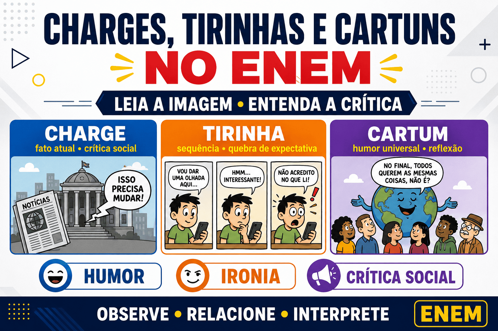

Charges, tirinhas e cartuns no ENEM: como interpretar
Charges, tirinhas e cartuns aparecem com frequência nas questões de Linguagens do ENEM porque permitem avaliar diferentes habilidades de leitura. Para compreender esses gêneros, o estudante precisa relacionar palavras, imagens, expressões faciais, símbolos, conhecimentos de mundo e informações sobre o contexto social.
Nessas questões, reconhecer o gênero é apenas o primeiro passo. O mais importante é identificar a crítica, o humor, a ironia e os efeitos de sentido construídos pela combinação entre linguagem verbal e não verbal.

O que são textos multimodais?
Textos multimodais são aqueles que combinam diferentes formas de linguagem para produzir sentido. Eles podem reunir palavras, imagens, cores, símbolos, gestos, enquadramentos e recursos gráficos.
Em uma tirinha, por exemplo, o sentido não está apenas nas falas dos personagens. A expressão facial, a sequência dos quadrinhos, o tamanho das letras e até o silêncio de um personagem podem ser fundamentais para a interpretação.
No ENEM, imagem e palavra devem ser analisadas conjuntamente. Ignorar qualquer um desses elementos pode levar a uma interpretação incompleta.
Qual é a diferença entre charge, tirinha e cartum?
Charge
A charge é um gênero que apresenta uma crítica relacionada a um acontecimento, personagem ou problema social reconhecível. Ela costuma dialogar com fatos políticos, econômicos, ambientais ou culturais.
- Está frequentemente ligada a um fato atual ou contexto histórico específico;
- Utiliza ironia, exagero e caricatura;
- Apresenta posicionamento crítico;
- Exige que o leitor mobilize conhecimentos de mundo;
- Pode perder parte do sentido quando é separada do contexto em que foi publicada.
Exemplo
Uma imagem mostra uma cidade completamente alagada. Ao lado de um bueiro cheio de lixo, uma personagem reclama: “A chuva sempre causa esses problemas”.
A crítica não está direcionada apenas à intensidade da chuva. A presença do lixo sugere que o comportamento humano, a falta de planejamento urbano e a deficiência da limpeza pública também contribuem para os alagamentos.
Tirinha
A tirinha é uma narrativa curta, normalmente organizada em dois ou mais quadrinhos. Ela apresenta personagens, ações e uma progressão temporal, frequentemente encerrada com uma quebra de expectativa.
- Apresenta uma sequência de acontecimentos;
- Pode explorar situações cotidianas;
- Utiliza diálogos, pensamentos e recursos visuais;
- Frequentemente produz humor no último quadrinho;
- Pode abordar comportamentos humanos e problemas sociais.
Exemplo
No primeiro quadrinho, um estudante afirma que passará menos tempo conectado ao celular. No segundo, ele abre um aplicativo para pesquisar como reduzir o uso das redes sociais. No último, continua assistindo a vídeos sobre o assunto várias horas depois.
O humor surge da contradição entre a intenção inicial da personagem e seu comportamento posterior.
Cartum
O cartum também utiliza humor e crítica, mas costuma abordar situações mais universais e menos dependentes de um acontecimento específico. Por isso, sua mensagem pode continuar compreensível mesmo muito tempo depois da publicação.
- Aborda comportamentos e problemas universais;
- Não depende necessariamente de uma notícia recente;
- Pode explorar relações familiares, tecnologia, educação e meio ambiente;
- Utiliza humor, ironia, exagero e contradição.
Exemplo
Duas pessoas estão sentadas frente a frente, mas conversam somente por mensagens no celular. O cartum critica o distanciamento criado pelo uso excessivo da tecnologia, situação que não depende de uma notícia específica.
Como diferenciar esses três gêneros rapidamente?
- Charge: crítica relacionada a um fato ou contexto reconhecível.
- Tirinha: narrativa curta em sequência de quadrinhos.
- Cartum: humor ou crítica sobre uma situação mais universal.
Essa diferenciação ajuda na leitura, mas não deve ser tratada de forma rígida. Uma tirinha também pode fazer crítica social, e uma charge pode apresentar mais de um quadrinho. O contexto, a finalidade e a organização do texto devem ser considerados em conjunto.
Como charges, tirinhas e cartuns aparecem no ENEM?
O ENEM geralmente não solicita apenas a definição do gênero. A questão apresenta o texto e avalia se o candidato consegue compreender como os diferentes recursos contribuem para a construção da mensagem.
Entre as habilidades mais cobradas estão:
- identificar o tema e a finalidade comunicativa;
- reconhecer uma crítica social;
- compreender ironia, humor e sarcasmo;
- relacionar linguagem verbal e não verbal;
- interpretar expressões faciais e gestos;
- perceber contradições e quebras de expectativa;
- compreender referências históricas e culturais;
- identificar ambiguidades e efeitos de sentido;
- analisar o posicionamento assumido pelo autor.
Linguagem verbal e não verbal
A linguagem verbal é formada pelas palavras presentes nos balões, nas legendas, nos títulos e em outros elementos escritos. A linguagem não verbal inclui imagens, cores, gestos, símbolos, expressões e disposição dos elementos gráficos.
Exemplo de relação entre palavra e imagem
Uma personagem olha para uma praça cheia de lixo e afirma: “Que exemplo de cuidado com o espaço público!”.
Se a frase fosse analisada isoladamente, pareceria um elogio. Entretanto, a imagem contradiz a fala e revela um sentido irônico.
Quando a fala de uma personagem parece incompatível com a imagem, verifique se existe ironia. Essa contradição é uma estratégia recorrente em charges e cartuns.
Como identificar o humor?
O humor pode ser produzido por diferentes mecanismos. Nas questões do ENEM, é necessário explicar o que provoca esse efeito, em vez de apenas afirmar que o texto é engraçado.
Quebra de expectativa
O leitor é conduzido a esperar determinado desfecho, mas o último quadrinho apresenta uma conclusão inesperada.
Contradição
O comportamento da personagem contradiz aquilo que ela afirma ou defende.
Duplo sentido
Uma palavra ou expressão pode assumir duas interpretações, produzindo ambiguidade intencional.
Exagero
Características, comportamentos ou acontecimentos são apresentados de forma ampliada para destacar uma crítica.
Inadequação ao contexto
Uma personagem utiliza uma fala ou toma uma atitude incompatível com a situação apresentada.
Ironia, sarcasmo e crítica social
A ironia ocorre quando o sentido pretendido não corresponde literalmente ao que foi dito. O leitor precisa observar o contexto para perceber essa diferença.
O sarcasmo é uma manifestação mais agressiva da ironia, geralmente utilizada para ridicularizar ou atacar determinado comportamento. Já a crítica social denuncia ou questiona problemas coletivos, instituições, discursos e relações de poder.
Alguns temas recorrentes nesses gêneros são:
- desigualdade social;
- problemas ambientais;
- desinformação;
- consumismo;
- uso excessivo da tecnologia;
- intolerância e preconceito;
- educação e cidadania;
- contradições políticas e sociais.
Passo a passo para interpretar no ENEM
- Identifique o gênero: verifique se o texto apresenta características de charge, tirinha ou cartum.
- Observe o contexto: procure datas, personagens, objetos, notícias ou referências culturais.
- Leia todos os elementos: analise falas, legendas, imagens, expressões faciais e símbolos.
- Reconheça a situação inicial: descubra o que está acontecendo antes de buscar a crítica.
- Procure a ruptura: identifique uma contradição, exagero ou quebra de expectativa.
- Formule a mensagem central: pergunte qual comportamento, discurso ou problema está sendo questionado.
- Volte ao comando: confira exatamente qual aspecto a questão deseja avaliar.
- Elimine as alternativas incompatíveis: descarte respostas que exagerem, reduzam ou distorçam a crítica apresentada.
Erros comuns nas questões
Analisar somente as falas
Em textos multimodais, a imagem também produz sentido. Muitas vezes, é justamente a contradição entre fala e imagem que revela a crítica.
Confundir tema com crítica
Uma tirinha pode ter a tecnologia como tema, mas criticar especificamente a dependência digital ou a substituição das relações presenciais.
Usar a opinião pessoal
A resposta deve ser sustentada pelos elementos do texto. Concordar ou discordar da crítica não interfere na resolução.
Escolher uma alternativa ampla demais
Algumas alternativas abordam um problema social verdadeiro, mas que não está presente no texto. A resposta correta precisa corresponder ao recorte construído pela charge, tirinha ou cartum.
Ignorar o último quadrinho
Nas tirinhas, o desfecho frequentemente modifica o sentido dos quadrinhos anteriores e produz o humor.
Questão comentada
Texto: em uma tirinha, uma personagem publica nas redes sociais a mensagem “Precisamos conversar mais pessoalmente”. No último quadrinho, ela envia a mesma mensagem às pessoas que estão sentadas ao seu lado.
O efeito de humor é construído principalmente pela:
- defesa das mensagens digitais como único meio de comunicação.
- contradição entre o discurso da personagem e sua própria atitude.
- impossibilidade de compreender a mensagem publicada.
- utilização de uma linguagem excessivamente formal.
- ausência de recursos visuais na construção da narrativa.
Resposta: B.
A personagem defende a conversa presencial, mas utiliza justamente uma mensagem digital para se comunicar com pessoas que estão ao seu lado. Essa contradição produz o humor e sustenta a crítica ao uso excessivo das tecnologias nas relações cotidianas.
Exercícios de interpretação
Questão 1
Uma ilustração mostra um homem regando uma pequena planta enquanto, atrás dele, diversas árvores são derrubadas. Ele afirma: “Estou fazendo a minha parte”.
A crítica é construída pela contradição entre:
- a preservação individual e a destruição ambiental em grande escala.
- o crescimento da planta e a falta de água.
- o trabalho rural e o desenvolvimento urbano.
- a linguagem verbal e a ausência de imagens.
- o cuidado com a floresta e a redução do consumo.
Ver resposta comentada
Resposta: A. A pequena ação individual contrasta com a destruição ambiental que ocorre ao fundo, questionando a insuficiência de atitudes isoladas diante de problemas estruturais.
Questão 2
Em uma sequência de três quadrinhos, uma personagem reclama que não encontra tempo para ler. No último quadrinho, aparece o relatório de seu celular indicando seis horas diárias em redes sociais.
O humor decorre:
- da dificuldade de acesso aos livros.
- da proibição do uso de redes sociais.
- da contradição entre a justificativa apresentada e o uso do tempo.
- do emprego de palavras desconhecidas.
- da ausência de progressão narrativa.
Ver resposta comentada
Resposta: C. A informação apresentada no último quadrinho mostra que a falta de tempo não é absoluta, mas está relacionada às prioridades da personagem.
Questão 3
Uma charge apresenta uma autoridade usando um guarda-chuva para se proteger de papéis com a palavra “dados”, enquanto afirma que não há motivo para preocupação.
A imagem sugere que a autoridade:
- desconhece completamente a existência dos dados.
- tenta minimizar informações que contradizem seu discurso.
- deseja proteger os documentos da chuva.
- valoriza a divulgação transparente das informações.
- considera os dados irrelevantes para a sociedade.
Ver resposta comentada
Resposta: B. A fala procura transmitir tranquilidade, mas a atitude defensiva revela que os dados representam uma ameaça ao discurso da personagem.
Como estudar charges, tirinhas e cartuns?
- resolva questões de edições anteriores do ENEM;
- leia diferentes textos multimodais;
- acompanhe acontecimentos sociais, culturais e ambientais;
- pratique a identificação de ironia e quebra de expectativa;
- explique com suas próprias palavras qual é a crítica de cada texto;
- registre os erros cometidos e revise as alternativas incorretas;
- analise sempre a relação entre os elementos verbais e visuais.
Resumo
- A charge geralmente se relaciona a um acontecimento ou contexto específico.
- A tirinha apresenta uma narrativa curta organizada em quadrinhos.
- O cartum costuma abordar situações universais.
- O humor pode surgir da ironia, contradição, ambiguidade, exagero ou quebra de expectativa.
- Linguagem verbal e não verbal devem ser interpretadas conjuntamente.
- A resposta deve ser fundamentada nos elementos apresentados no texto.
Perguntas frequentes
Qual é a principal diferença entre charge e cartum?
A charge costuma estar relacionada a um fato, personagem ou contexto específico. O cartum geralmente apresenta uma crítica mais universal, que pode ser compreendida sem o conhecimento de uma notícia recente.
Toda tirinha é humorística?
Não. Muitas tirinhas utilizam humor, mas o gênero também pode desenvolver reflexões, críticas sociais e situações sem uma finalidade necessariamente cômica.
Como identificar a ironia?
Observe se o sentido pretendido é diferente do significado literal da fala. Contradições entre palavra, imagem e contexto são sinais importantes de ironia.
É necessário conhecer a notícia para interpretar uma charge?
Em muitos casos, sim. Como a charge pode dialogar com acontecimentos políticos e sociais, o conhecimento do contexto ajuda a compreender as personagens, os símbolos e a crítica.
O ENEM cobra a definição desses gêneros?
O exame pode exigir o reconhecimento do gênero, mas geralmente prioriza a interpretação, a finalidade comunicativa e os efeitos de sentido produzidos pelos recursos verbais e visuais.
Referências para estudo
- BRASIL. Instituto Nacional de Estudos e Pesquisas Educacionais Anísio Teixeira. Matriz de Referência do ENEM.
- BRASIL. Instituto Nacional de Estudos e Pesquisas Educacionais Anísio Teixeira. Provas e gabaritos do ENEM.
- EISNER, Will. Quadrinhos e arte sequencial.
- RAMOS, Paulo. A leitura dos quadrinhos.
Conteúdos relacionados
Explore Outros Conteúdos
Continue seus estudos acessando outras seções do site Mestre Kira: